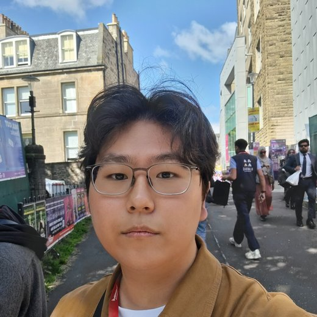
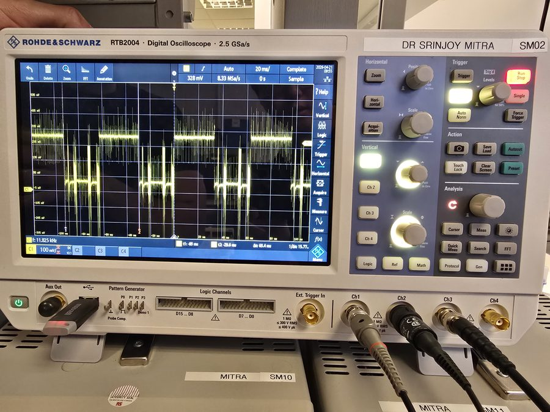
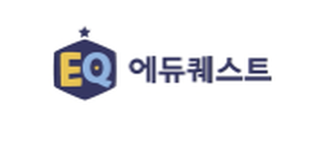
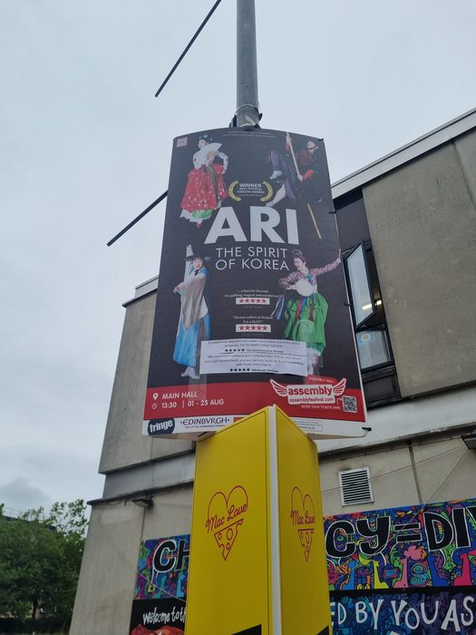

sdajb.github.io
Understanding systems. Validating them. Making them better.
Electronics & Electrical Engineering, University of Edinburgh

about
A short introduction
I'm a final-year Electronics and Electrical Engineering student at the University of Edinburgh, with practical experience in embedded systems, low-level communication protocols, and technical problem-solving.
My final-year project involved building a 1-Wire to I²C communication bridge for wearable inertial sensing — covering protocol analysis, embedded firmware development, and signal-level performance validation.
Outside the lab, I've worked in process automation, technical content development, and live event operations — roles that have pushed me to communicate technical ideas clearly and get things to actually work in practice.
skills
What I work with
certifications
Currently building
Career Essentials in Generative AI
Microsoft & LinkedIn
OCI AI Foundations Associate
Oracle
Lean Six Sigma Yellow Belt
Process improvement
projects
What I've built

Final year project — Embedded communication bridge
Designed and implemented a 1-Wire / I2C communication bridge for wearable inertial sensing, from protocol analysis through firmware development to signal-level validation across multiple sensor pairs.
Validated communication reliability across sensor pairs, including timing analysis, ROM ID handling, and noise comparison against an I2C baseline.
View details →
AI R&D — Eduquest
Structured technical learning content and automated workflows for AI-assisted educational programs.
View details →
Edinburgh Fringe Festival
Stage electronics and on-site technical operations for large-scale live events.
View details →experience
Timeline
Aug 2025 — completed
Final year project — Embedded Communication Systems
The University of Edinburgh
Aug 2024
Project Worker
Edinburgh Fringe Festival — Korean Season
May — Jun 2024
AI R&D and Marketing Content Development
Eduquest, Seoul
Dec 2021 — Dec 2022
Restaurant Manager
Kim's Bulgogi, Edinburgh
Oct 2021 — Feb 2023
English & Maths Tuition Teacher
Freelance
contact